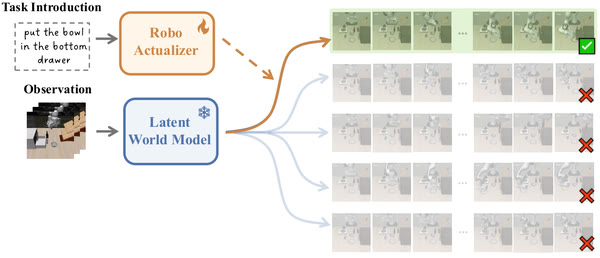

One from Infinity: Actualizing Futures from Pretrained World Models into Robot Actions
Under review arXiv, 2026
RoboActualizer turns a frozen pretrained latent world model into a robot policy with a lightweight action module, instead of fine-tuning the heavy backbone.